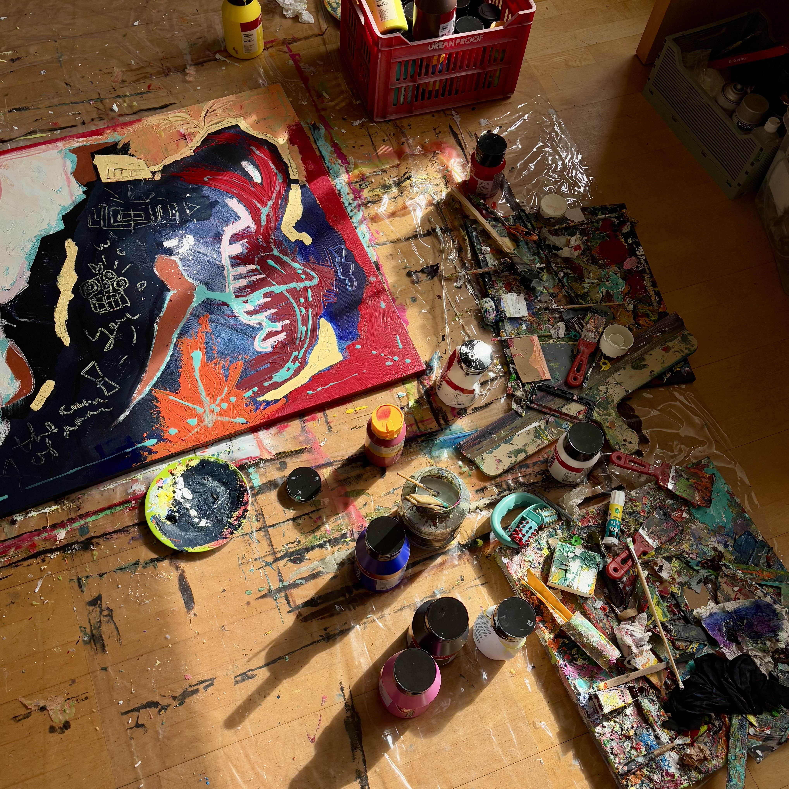
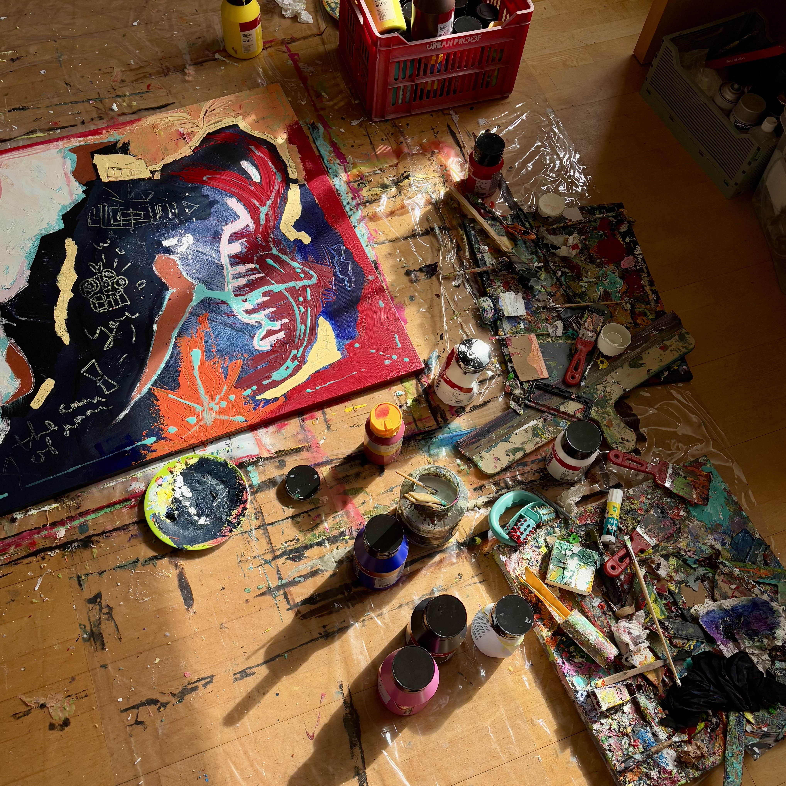

@ANTONIVDGEIJN

@ANTONIVDGEIJN

Antoni van de Geijn
Antoni van de Geijn es un artista visionario de 20 años con base en Madrid. Su obra va más allá de la pintura tradicional y se convierte en un acto de creación de mundos a través del arte.
En el centro de su práctica está El Universo Visual, un cuerpo de trabajo cinematográfico e interconectado que transforma la pintura en narrativa. Fascinado por la construcción de mundos, Antoni no replica lo visible; en cambio, dirige la mirada hacia su interior y crea realidades abstractas e imaginadas que exploran la emoción, la memoria y las historias no contadas. Cada lienzo es una escena dentro de este universo en expansión, donde los personajes reaparecen, se cruzan e interactúan en diferentes obras dentro de una línea temporal compleja y en desarrollo.
Sus mundos están vivos, evolucionan de forma orgánica y profundizan la sensación de inmersión con cada nueva pieza. Para darles forma, Antoni experimenta con herramientas poco convencionales como compases, cartón y espátulas, creando superficies táctiles y texturizadas que unen la abstracción con la narrativa.
Influenciado por el cine y la poesía, compone su obra con un ritmo cinematográfico y una resonancia poética, entrelazando la narración visual con una profunda carga emocional. A través de Art by Ant, ha creado un espacio multidisciplinario donde la pintura, el cine y la poesía convergen.
Adéntrate en El Universo Visual y explora los mundos imaginados de Antoni van de Geijn, una voz creativa emergente que busca abrir nuevos caminos en el arte contemporáneo.